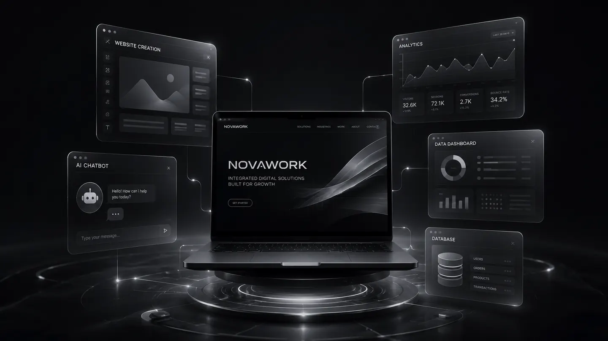

ABOUT NOVAWORK
보기 좋은 것을 넘어,
쓰기 좋은 것까지.
아이디어가 실제 업무와 만나는 곳. 노바워크입니다.

CONNECTED DIGITAL EXPERIENCESOUR APPROACH
작동하는 결과를,
함께 만들어갑니다.
01
먼저 이해합니다.
기술 이름보다 해결하고 싶은 일을 먼저 듣습니다.
02
함께 확인합니다.
중간 화면을 보며 필요한 부분을 구체화합니다.
03
이어 쓸 수 있게 만듭니다.
제작 소스와 사용 안내를 함께 전달합니다.
먼저 보고, 시작하세요.
웹시스템·데이터 자동화는
무료 예시 시안으로 방향을 확인해요.
기획서가 없어도 괜찮아요.
원하는 결과만 이야기하면,
필요한 구성은 함께 정리해요.
만든 다음까지 생각해요.
제작한 소스와 사용 안내를 함께.
직접 운영할 수 있도록 연결해요.
LET’S MAKE IT WORK
정리되지 않은 생각도,
좋은 시작이 됩니다.
지금 필요한 것부터 편하게 이야기해 주세요.